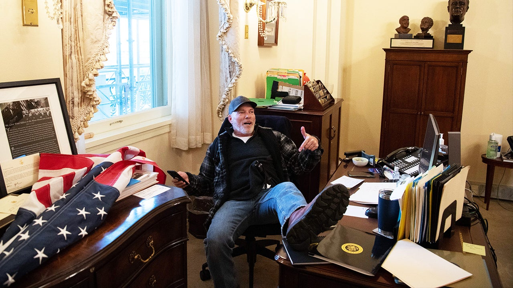
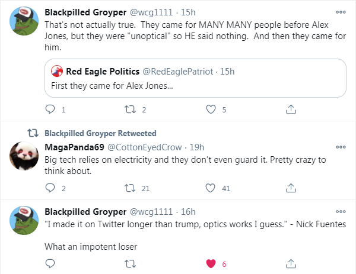

Nick Fuentes Banned from DLive
January 9th, 2021
You love to see it.
Well after the gigantic fuck you to the establishment performed by Trump's last Supporters, there have been consequences. Consequences in real life, such as the man above being arrested, and consequences online. YouTube has long been a censorious platform, but DLive has now joined in on the fray, despite advertising itself as a Free Speech Platform.
List of accounts that have been banned:
dlive.tv/NickJFuentes
dlive.tv/BakedAlaska
dlive.tv/MurderTheMedia
dlive.tv/Woozuh
dlive.tv/Gloomtube
dlive.tv/Loulz
dlive.tv/Zykotik
Murder the Media really pisses me off, because those were great goys there, but I have to say, I think it's hilarious that Fuentes, the backstabbing little bitch, gets banned from DLive, despite constantly whining about "muh bad optics," from actually serious men.
For those who don't know, I used to be a highly respected poster on the old DailyStormer forum, the Goyim Know. I was very influential during the Groyper Wars, which I still support BTW, even knowing what a narcissistic shill Fuentes is. Really helped the goys there with some tractable advice for dealing with Charlie Kirk and the TPUSA shills. I got banned within a minute of making a comment under one of Anglin's articles where he correctly pointed out that Trump winning was actually bad for us, and the (((establishment))) wants Trump to win. My comment was:
--------------------------------------
"Jews want Trump to win so they can pretend to be fighting against the system, because they prefer to not be seen as being in charge." - Andrew Anglin
"The TRS guys are feds, they don't want Trump to win." - Also Andrew Anglin
--------------------------------------
I was immediately banned completely from the forum for "shilling for feds". At first I thought it was a joke, but nope, banned. So just in case any retard tries to get it into their heads that Anglin, Weev, Fuentes, and the like are genuinely "in this together" with us or some other idiocy, they are not just telling their followers that TRS are feds, but they will immediately ban respected contributors to the forum for the absolute mildest defense of TRS. Yeah, there is no "us" here.
Interesting to me has been the response of Fuentes dwindling followers.

It's nice to see how people recognize that "good optics," simply means being an impotent cuck for the establishment. The second they deem you to be a moderate problem, you're gonna get censored too.
The manlet lecturing you on "optics"
Man that whole "optics," thing always really pissed me off. A way for catty faggotts to excuse not taking a stand against tyranny. Fuck those people.